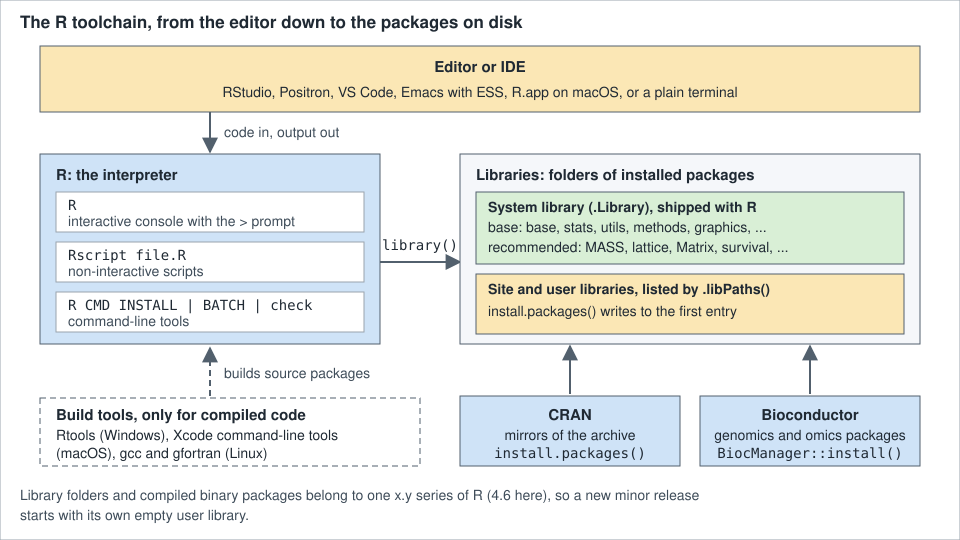

Getting Started
|
This content was generated with the assistance of AI and should be verified against the official documentation before being relied on in production. |
Checked against R 4.6.1 (2026-06-24) on 2026-10-20; R 4.6.2 is scheduled for 2026-10-29. Every example on this page uses base R only, so no add-on package has to be installed to follow it, and every script was run with Rscript on R 4.6.1 without errors or warnings (the commands in Common Errors a Beginner Meets fail on purpose, and the page says what each one prints). Where an installer, a menu or a prompt cannot be run from a script (the macOS and Windows installers, q(), the + continuation prompt, chooseCRANmirror()), the page shows a console transcript and says so, and its text is taken from the official manuals. Printed output that would show the machine it ran on (the platform triplet, the operating system, library paths, timings) is shortened, and the text says where.
This is the first stop of the section. It gets a working R, shows the console and a first script, explains how packages reach the machine, and explains what the numbers in 4.6.1 mean. The language itself starts with Syntax and Lexical Structure, the tools you type into are in IDEs and the R Console, and the section index gives the reading order.
Throughout the section the examples follow one small scenario, the shelf: a public library’s books and loans, kept in two CSV files (books.csv and loans.csv). The first shelf session is on this page, in A First Shelf Session.
What R Is For
R is described by its own manuals in two complementary ways. "An Introduction to R" calls it an integrated suite of software facilities for data manipulation, calculation and graphical display, with an effective data-handling facility, operators for arrays and matrices, graphical facilities and a well-developed programming language (also called S). The R FAQ calls it a system for statistical computation and graphics that consists of a language plus a run-time environment, and adds that the design was heavily influenced by the S language of Becker, Chambers and Wilks and by Sussman’s Scheme: the surface looks like S, the semantics underneath come from Scheme. R was started by Ross Ihaka and Robert Gentleman at the University of Auckland, it is developed by the R Core Team (a group that has been able to modify the sources since mid-1997), and it is free software released under the GNU General Public License, version 2 or version 3. The core is an interpreted language; code in C, C++ or Fortran can be called from it when speed matters, and most of the user-visible functions are themselves written in R.
What people use it for falls into five overlapping groups:
-
Statistics. The distribution ships linear and generalized linear models, nonlinear regression, time-series analysis, classical parametric and nonparametric tests, clustering and smoothing (the R FAQ lists them). New statistical methods very often appear first as an R package.
-
Data analysis. Reading a file into a data frame, cleaning it, summarising it by group and fitting a model is the everyday R workflow, and it is the thread of this whole section (see Data Frames and The Tidyverse and dplyr).
-
Visualisation. The
graphicspackage draws plots straight from the console, the recommendedlatticepackage and thegridsystem add trellis-style and low-level graphics, and add-on packages such as ggplot2 build a grammar of graphics on top (see Base Graphics and Devices and ggplot2 and the Grammar of Graphics). -
Reproducible research. R ships
Sweave, which mixes prose and code in one document so that the report is regenerated from the data; Quarto and R Markdown continue that idea (see Reports with Quarto and R Markdown). -
Bioinformatics. Bioconductor is an open-source, open-development project for the analysis of genomic data, distributed as R add-on packages; the R FAQ describes its scope as growing from DNA microarrays to all kinds of genomic data.
"Where it is used" is easiest to see from the CRAN Task Views, the curated lists of packages for a topic. They include actuarial science, Bayesian inference, clinical trials, econometrics, empirical finance, epidemiology, machine learning, official statistics, genomics and other omics, and many more. An R session is also not tied to statistics: "An Introduction to R" notes that most programs written in R are essentially ephemeral, written for one piece of data analysis, which is why this page spends as much time on the console and on running a single script as on installation.
Source: R-intro, 1.1 The R environment
Source: R FAQ, 2.1 What is R?
Source: CRAN Task Views
The Toolchain at a Glance
Before installing anything it helps to know which pieces exist, because every installation question ("where did that package go?", "why does this need a compiler?") is a question about one of them.

-
R itself is the interpreter: the
Rcommand (the console, withRguiandRtermon Windows and R.app on macOS), theRscriptfront end for non-interactive runs, and theR CMDtools (R CMD INSTALL,R CMD BATCH,R CMD check). -
Base and recommended packages are installed with R. The base packages (
base,stats,utils,methods,graphics,grDevices,datasetsand a few more) are the language’s standard library; the recommended packages (MASS,lattice,Matrix,survival,nlmeand others) are standard tools that every full R installation includes. -
Libraries are directories that contain installed packages, one subdirectory per package.
.Libraryis the system library inside the R installation;.libPaths()lists every library R currently searches, in order. Sites and users add libraries through the environment variablesR_LIBS_SITEandR_LIBS_USERor by calling.libPaths(). -
CRAN and Bioconductor are where add-on packages come from. CRAN, the Comprehensive R Archive Network, is a set of mirrored sites that carry the R distribution, the contributed packages and the documentation. Bioconductor is a second repository, for genomics, managed through the
BiocManagerpackage. -
The editor or IDE is optional: R works from a plain terminal. RStudio, Positron, Visual Studio Code, Emacs with ESS and the R.app GUI all do the same thing, which is to send text to the console and show what comes back (see IDEs and the R Console).
The next script asks the installed R what it ships with. "An Introduction to R" says that about 25 packages come with R, the "standard" and "recommended" ones; on the 4.6.1 installation used for this page the count is 14 base packages and 15 recommended packages.
# What ships with R, and where installed packages live.
base_pkgs <- rownames(installed.packages(priority = "base"))
length(base_pkgs)
#> [1] 14
base_pkgs
#> [1] "base" "compiler" "datasets" "graphics" "grDevices" "grid"
#> [7] "methods" "parallel" "splines" "stats" "stats4" "tcltk"
#> [13] "tools" "utils"
recommended <- rownames(installed.packages(priority = "recommended"))
length(recommended)
#> [1] 15
recommended
#> [1] "boot" "class" "cluster" "codetools" "foreign"
#> [6] "KernSmooth" "lattice" "MASS" "Matrix" "mgcv"
#> [11] "nlme" "nnet" "rpart" "spatial" "survival"
libs <- .libPaths()
is.character(libs)
#> [1] TRUE
identical(.Library, tail(libs, 1L))
#> [1] TRUE
"stats" %in% base_pkgs
#> [1] TRUEThe paths in .libPaths() differ from machine to machine (and are not printed here); what is stable is the shape. The last entry is the standard library, .Library, and the first entry is the library that install.packages() writes to when you do not pass lib. "R Installation and Administration" describes the rest: an optional site library, and user libraries given by R_LIBS_USER, which are used only when the directory exists. Some Linux distributions split the recommended packages out of the main package: on Debian and Ubuntu r-base and r-recommended install into /usr/lib/R/library and the packages built from CRAN that the distribution provides (r-cran-*) go to /usr/lib/R/site-library.
Source: R-admin, 6.2 Managing libraries
Source: R documentation: .libPaths
Library folders and compiled binary packages belong to one x.y series of R. "R Installation and Administration" says that most binary packages that include compiled code are tied to a particular series (4.5.x or 4.4.x, for example), and the R for Windows FAQ says that when the minor version changes you must install the packages you need again, because the new R uses a new location for the personal library and a library copied from the old one may be incompatible (see Release Cycle and Version Numbers).
Installing R
Binary installers, distribution packages and source tarballs all come from, or are described by, CRAN. The R FAQ and "R Installation and Administration" (chapters 1 to 4: obtaining R, installing under Unix-alikes, installing under Windows and installing under macOS) are the references; the R for macOS FAQ and the R for Windows FAQ answer the platform questions.
| Platform | Where it comes from | What you get |
|---|---|---|
macOS |
The "R for macOS" page on CRAN: one |
The R framework and the R.app GUI (the Tcl/Tk and Texinfo components are optional). |
Windows |
The "R for Windows" page on CRAN: the |
|
Linux |
Your distribution’s packages, or the CRAN repositories for Debian and Ubuntu. |
|
Any Unix-alike |
The source tarball from CRAN, built with |
A build you control; needs a C compiler and a Fortran compiler, plus the libraries listed in the manual. |
macOS
The CRAN macOS page offers two installers for 4.6.1: R-4.6.1-arm64.pkg for Apple silicon Macs (macOS 14 or later) and R-4.6.1-x86_64.pkg for Intel Macs (macOS 11 or later). Both are signed and notarized Apple Installer packages; double-click the file you downloaded (download to the desktop or your home folder rather than the Downloads folder, which the installer may not be allowed to read) and follow the steps. The installer offers four components; everyone needs the "R Framework", and the Tcl/Tk and Texinfo components are optional (Tcl/Tk is needed by the tcltk package, Texinfo only when installing source packages or R from source). The CRAN page shows how to check the download:
pkgutil --check-signature R-4.6.1-arm64.pkgSource: R for macOS (CRAN)
Three details from "R Installation and Administration" and the R for macOS FAQ are worth knowing. First, R.app (the GUI console in /Applications) and the command-line R and Rscript both come from the same installation. Second, the X11 graphics device and the tcltk package need XQuartz. Third, the installer replaces the previous version with the same x.y series, and different series live side by side under /Library/Frameworks/R.framework/Versions (such as 4.6 and 4.5-arm64), with R.app always running the last one installed, so 4.6.0 and 4.6.1 cannot coexist but 4.5 and 4.6 can.
Windows
Download R-4.6.1-win.exe from the "R for Windows" page, double-click it and follow the instructions; you choose a language for the installer, which applies to installation and uninstallation but not to running R. 64-bit R for Windows 10 and later is the supported build (R 4.1 was the last release with a 32-bit build), it uses the Universal C Runtime that ships with Windows 10 and Windows Server 2016 and later, and from R 4.2.0 it uses UTF-8 as its native encoding where Windows supports it. Rgui.exe is the graphical console and Rterm.exe the terminal one; people who run R from a terminal usually prefer Rterm.exe. The installer does not put R on the PATH by default, so R and Rscript typed into a Command Prompt work only after you add the bin directory of the installation to the PATH or give the full path. R can be uninstalled from the Control Panel, and uninstalling removes only the files of the initial installation, not the packages you added.
Source: R for Windows (CRAN)
Linux
Distribution packages are the simplest route, with the caveat that a distribution’s R can be older than the current release; the commands below install the R that the distribution offers, and the CRAN pages say how to get newer builds.
On Debian the base R system has been packaged since 1997. r-base installs R and the recommended packages, and r-base-dev is needed only if you compile packages from source:
sudo apt update
sudo apt install r-base r-base-devOn Ubuntu, CRAN publishes its own apt repository for the supported long-term-support releases. The "Ubuntu Packages For R" page says to add the signing key and the repository (lsb_release -cs picks the release name, and the suffix -cran40 marks the binary compatibility break of R 4.0 and still installs the current 4.6 series), then install r-base:
sudo apt update -qq
sudo apt install --no-install-recommends software-properties-common dirmngr
wget -qO- https://cloud.r-project.org/bin/linux/ubuntu/marutter_pubkey.asc | sudo tee -a /etc/apt/trusted.gpg.d/cran_ubuntu_key.asc
sudo add-apt-repository "deb https://cloud.r-project.org/bin/linux/ubuntu $(lsb_release -cs)-cran40/"
sudo apt install --no-install-recommends r-baseSource: Ubuntu packages for R (CRAN)
On Fedora, the R package is a meta-package that pulls in R-core (the runtime), R-core-devel (the files needed to build packages), the Java variants and the standalone math library; installing the meta-package is the recommended route, because most users need all of the components. CentOS and RHEL get the same RPMs from EPEL.
sudo dnf install RAfter installing from any of them, R --version should print the version you expect; if it prints an older one, the distribution’s repository is behind CRAN.
From Source
Building from source is covered by chapter 2 of "R Installation and Administration": unpack R-x.y.z.tar.gz, run ./configure and make, and optionally make install. The R FAQ adds that you need a Fortran compiler as well as a C compiler. Daily snapshots of R-patched and R-devel are available from CRAN as well, and the manual notes that they are built exactly like releases. Most readers never need this route; it matters for testing against R-devel and for unusual platforms.
Several Versions With rig
A machine that needs more than one R (a stable one for work and the newest for testing) can use rig, the R Installation Manager. It is a community tool, not part of R and not maintained by R Core: it is published under the r-lib organisation on GitHub with the MIT licence (version 0.11.0 at the time of writing), and its README describes it as installing several R versions side by side, selecting them by symbolic names such as release, devel and oldrel or by exact version, and switching the default for the terminal and for the RStudio and Positron IDEs. It works on macOS, Windows and Linux, and on Windows it also installs and configures the matching Rtools. The README’s quick start is three commands:
rig add release
rig list
rig default 4.6.1Source: rig README (r-lib/rig)
Nothing in this section depends on rig; the official installers above are enough. It is mentioned because "which R am I running?" is a common source of confusion when several are installed, and Which R Is This? shows how to answer it from inside R.
Build Tools: Rtools, Xcode and Compilers
A binary package needs no tools to install, and that is what install.packages() fetches by default on Windows and macOS. Compilers matter only for source packages that contain C, C++ or Fortran code, which "R Installation and Administration" says need compilers and related tools to be installed, and for building R itself.
-
Windows. Rtools is the toolchain bundle (MSYS2 build tools, a GCC/MinGW-w64 compiler toolchain, prebuilt libraries and QPDF). Its version follows the R version: Rtools45 is the one used for R 4.5.0 and later, including R-devel; Rtools44 is for R 4.4.x, Rtools43 for 4.3.x, Rtools42 for 4.2.x, and Rtools40 for R 4.0.0 to 4.1.3. Install it from the Rtools page with the defaults (it goes to
C:\rtools45); R and Rtools can be installed in either order and no further setup is needed when R came from the installer. A 64-bit ARM variant exists and is experimental. -
macOS. Apple’s Command Line Tools provide the C and C++ compilers; running
xcode-select --installin a Terminal installs them, and a full Xcode installation includes them too. Packages with Fortran code also need a GNU Fortran compiler matched to R, which the CRAN macOS page points to at mac.R-project.org/tools. The tools may have to be reinstalled after a macOS upgrade. -
Linux. Install the development meta-package:
r-base-devon Debian and Ubuntu (it pulls in the basic requirements for compiling packages) andR-core-develon Fedora (included in theRmeta-package). Packages that link to system libraries may also need their build dependencies, typically-devor-develpackages with the header files, as the Debian page points out.
xcode-select --installSource: Rtools45 for Windows (CRAN)
The command-line tools example is a one-line shell command, not R code. Whether the tools are needed for a particular package is decided when you install it: the console prints the compiler error and the package page on CRAN lists the system requirements. The detail belongs on Packages, Libraries and Namespaces.
Checking the Installation
R --version and Rscript --version print the version banner and exit. The R banner continues with the platform line and the licence text, which are shortened here:
R --version
#> R version 4.6.1 (2026-06-24) -- "Happy Hop"
#> Copyright (C) 2026 The R Foundation for Statistical Computing
#> Platform: ...
#> ...
Rscript --version
#> Rscript (R) version 4.6.1 (2026-06-24)The text between the quotation marks on the first line, "Happy Hop", is the release nickname (see Release Cycle and Version Numbers).
The Console
Starting R, the Prompt and Continuation Lines
Typing R in a terminal (or opening R.app, Rgui, or an IDE’s console) starts an interactive session: R prints a banner and then the prompt >, which means that it is waiting for a complete command. "An Introduction to R" suggests creating a separate directory for each piece of work and starting R from it, because the working directory is where R looks for files and where it saves the workspace.
When what you typed is not yet a complete expression, R shows the continuation prompt + and waits for more. The usual causes are an open parenthesis or brace, an unfinished string, or an operator at the end of a line:
> total <- 1 +
+ 2
> total
#> [1] 3This is a console transcript: the prompts are printed by the interactive console and are not part of the code, which is why every other example on this page leaves them out and shows printed output as #> comments. (If you copy a transcript into a script with the > prompts included, R stops with Error: unexpected '>' in ">".)
The same prompt appears when a quote is left open, and then the prompt stays: everything you type is part of the string. The transcript below was produced by typing the lines into R in a terminal; the last step, pressing Ctrl-C, abandons the unfinished command and returns the > prompt:
> title <- "The Dispossessed
+ title
+
> title <- 1To interrupt a command that is waiting for input or a long computation, press Esc in R.app, RStudio and Positron, or Ctrl-C in a terminal (the macOS FAQ states both). The command line also has a readline-style editor: the up and down arrows recall earlier commands, and Ctrl-A and Ctrl-E move to the start and end of the line (the readline library must have been available when R was built; the R FAQ names libreadline-dev on Debian and readline-devel on Red Hat as the packages to install before compiling).
Autoprinting, print() and invisible()
At the console every expression you type is evaluated and its value is printed, unless the value is invisible. The value of an assignment is invisible, which is why x <- 42 prints nothing and x prints [1] 42, and parentheses make it visible again. invisible() returns its argument without printing it at the top level, which is how functions such as print() return the object they just printed. The next script, run with Rscript, shows each case; Rscript autoprints top-level expressions exactly like the console, only without echoing the code or the prompts:
# Autoprinting at the top level of a script run with Rscript.
1 + 1
#> [1] 2
x <- 42
x
#> [1] 42
(y <- 7)
#> [1] 7
invisible(5)
quiet <- function() invisible("not shown")
quiet()
print(quiet())
#> [1] "not shown"
v <- quiet()
v
#> [1] "not shown"
for (i in 1:2) i
for (i in 1:2) print(i)
#> [1] 1
#> [1] 2
1:30
#> [1] 1 2 3 4 5 6 7 8 9 10 11 12 13 14 15 16 17 18 19 20 21 22 23 24 25
#> [26] 26 27 28 29 30Source: R documentation: invisible
Read the output line by line against the script. 1 + 1 prints [1] 2; x <- 42 prints nothing, x prints [1] 42 and (y <- 7) prints [1] 7; invisible(5) and quiet() print nothing, print(quiet()) and v do. The two loops show that a loop returns NULL invisibly: for (i in 1:2) i produces no output at all, and only the explicit print(i) does, so inside loops and functions (as in files read by source(), see source() Prints Nothing) you must call print() yourself. The bracketed number at the start of each output line, [1] or [26], is the position, within the vector, of the first element on that line; the last example is a vector of 30 numbers wrapped at the console width.
Source: R documentation: print
Leaving R: q() and the Workspace
q() (the same function as quit()) ends the session. In an interactive terminal R then asks whether to save the workspace, the set of objects you created:
> q()
Save workspace image? [y/n/c]: nSource: R documentation: quit
The answers are y (write the objects to a file called .RData and the command history to .Rhistory in the working directory, both of which are loaded again the next time R starts there), n (quit without saving) and c (cancel and stay). This is a console transcript from the terminal version; the R.app and IDE consoles show a dialog instead, and the prompt could not be reproduced from a script. The save argument sets the answer in advance (q(save = "no")), and status sets the exit code that a script returns to the operating system (q(status = 1) for a failure).
Saving the workspace is rarely what you want. It makes the next session depend on objects that are no longer visible in any script, which is the opposite of reproducible. "An Introduction to R" recommends a separate working directory per analysis for exactly this reason, because names such as x and y are meaningful only within one analysis. The R FAQ explains the mechanics: save.image() saves the global environment to .RData in the startup directory (what q("yes") also does), and rm(list = ls(all.names = TRUE)) removes every object, including those whose names start with a dot. When R is started with --vanilla, or run through Rscript, no saved workspace is restored and none is saved (--no-save alone only stops saving). How .RData, .Rprofile, .Renviron and the working directory interact is the subject of Sessions, Workspaces and Startup.
Which R Is This?
Four ways to ask, from shortest to most complete:
-
R.version.stringis one string with the version and date. -
R.version(and its copyversion) is a list of classsimple.listwith the pieces:major,minor,year,month,day,status,language,nicknameand the platform fields.R.Version()returns the same information as a plain list. These describe the system R was built for;Sys.info()describes the one it is running on. -
getRversion()returns a version object that can be compared with strings, which is what scripts should use to test for a feature. -
sessionInfo()reports the version, the platform and operating system, the locale and time zone, the attached packages and the loaded namespaces, and is what to paste into a bug report or a question.
# Asking R which version it is.
R.version.string
#> [1] "R version 4.6.1 (2026-06-24)"
R.version$nickname
#> [1] "Happy Hop"
R.version$major
#> [1] "4"
R.version$minor
#> [1] "6.1"
R.version[c("major", "minor", "year", "month", "day", "language")]
#> _
#> major 4
#> minor 6.1
#> year 2026
#> month 06
#> day 24
#> language R
v <- getRversion()
v
#> [1] ‘4.6.1’
class(v)
#> [1] "R_system_version" "package_version" "numeric_version"
v$major
#> [1] 4
v$minor
#> [1] 6
v$patchlevel
#> [1] 1
v >= "4.1.0"
#> [1] TRUE
package_version("4.6.1") > "4.6"
#> [1] TRUE
packageVersion("stats")
#> [1] ‘4.6.1’
si <- sessionInfo()
si$R.version$version.string
#> [1] "R version 4.6.1 (2026-06-24)"
si$basePkgs
#> [1] "stats" "graphics" "grDevices" "utils" "datasets" "methods"
#> [7] "base"Source: R documentation: R.version
Two details deserve attention. R.version$minor is "6.1", a string that includes the patch level, so R.version$minor is not the minor version number; getRversion()$minor (the number 6) and getRversion()$patchlevel (1) are. And version comparisons must use version objects: getRversion() >= "4.1.0" compares component by component, while a string comparison would order "4.10.0" before "4.6.1". The R.version[...] call shows only part of the list; the full R.version also prints platform, arch, os, system, status and svn rev, which are omitted here because they identify the machine.
Source: R documentation: numeric_version
sessionInfo() prints a longer report. Its first lines name R, the platform and the operating system, then come the BLAS and LAPACK libraries, the locale and the time zone, and finally the attached base packages and the namespaces loaded without being attached. The listing below is shortened (the dots stand for the platform, library and locale lines that depend on the machine), and the attached base packages line is the one printed by a plain session:
sessionInfo()
#> R version 4.6.1 (2026-06-24)
#> Platform: ...
#> Running under: ...
#> ...
#> attached base packages:
#> [1] stats graphics grDevices utils datasets methods base
#> ...Source: R documentation: sessionInfo
This block is a fragment, not a script: the dots are not R code.
A First Session
"An Introduction to R" has a sample session (Appendix A) that is strongly recommended as a first hour at the computer. It starts the HTML help, generates random vectors, plots them, builds a data frame, fits a regression, reads a data set and ends with q(). The script below keeps the idea in the form used by this section, without graphics and without attach(): the manual’s session attaches the data frame to the search path, which the attach() help page itself warns can lead to confusion, and the modern replacement is to pass the data frame to the function through a data argument. Run it as a script (Rscript 01-first-session.R) or type it line by line into the console; the output is identical.
# A first R session: numbers, a vector, a simulated data frame and a model.
# The model part follows the "A sample session" appendix of "An Introduction
# to R", written with a data argument instead of attach().
2 + 3 * 4
#> [1] 14
sqrt(16)
#> [1] 4
x <- c(10.4, 5.6, 3.1, 6.4, 21.7)
x
#> [1] 10.4 5.6 3.1 6.4 21.7
mean(x)
#> [1] 9.44
summary(x)
#> Min. 1st Qu. Median Mean 3rd Qu. Max.
#> 3.10 5.60 6.40 9.44 10.40 21.70
rev(sort(x))
#> [1] 21.7 10.4 6.4 5.6 3.1
set.seed(282)
n <- 20
w <- 1 + sqrt(1:n) / 2
dummy <- data.frame(x = 1:n, y = 1:n + rnorm(n) * w)
head(dummy, 4)
#> x y
#> 1 1 0.5128164
#> 2 2 1.2342158
#> 3 3 3.6169707
#> 4 4 2.6684097
fm <- lm(y ~ x, data = dummy)
coef(fm)
#> (Intercept) x
#> 0.1634846 0.9984570
summary(fm)
#>
#> Call:
#> lm(formula = y ~ x, data = dummy)
#>
#> Residuals:
#> Min 1Q Median 3Q Max
#> -6.2764 -0.7184 -0.0039 0.4716 5.9796
#>
#> Coefficients:
#> Estimate Std. Error t value Pr(>|t|)
#> (Intercept) 0.1635 1.2462 0.131 0.897
#> x 0.9985 0.1040 9.598 1.67e-08 ***
#> ---
#> Signif. codes: 0 ‘***’ 0.001 ‘**’ 0.01 ‘*’ 0.05 ‘.’ 0.1 ‘ ’ 1
#>
#> Residual standard error: 2.683 on 18 degrees of freedom
#> Multiple R-squared: 0.8365, Adjusted R-squared: 0.8275
#> F-statistic: 92.12 on 1 and 18 DF, p-value: 1.674e-08
#>
fm1 <- lm(y ~ x, data = dummy, weights = 1 / w^2)
coef(fm1)
#> (Intercept) x
#> -0.1544059 1.0274361
ls()
#> [1] "dummy" "fm" "fm1" "n" "w" "x"
rm(list = ls())
ls()
#> character(0)What each part shows:
-
2 + 3 * 4andsqrt(16)are expressions whose values are autoprinted; arithmetic follows the usual precedence. The numbers are vectors: the[1]in front of them is a label for the first element. -
x <- c(10.4, 5.6, 3.1, 6.4, 21.7)builds a numeric vector withc()and stores it under the namexwith the assignment arrow<-, the same example as in section 2.1 of the manual.mean(),summary()andsort()are ordinary functions applied to the whole vector. -
set.seed(282)makes the pseudo-random numbers fromrnorm()reproducible; without it the data frame, and every coefficient below it, would change on each run. The weightswand the responseyare built from vectors of length 20 in one expression, which is vectorised arithmetic. -
lm(y ~ x, data = dummy)fits a linear regression ofyonx; the first argument is a formula, written with the tilde (y ~ xreads "y modelled on x").coef()extracts the estimates andsummary()prints the table of coefficients, the residual standard error and the R-squared and F statistics. The second fit passesweights = 1 / w^2because the standard deviations are known, as in the manual. -
ls()lists the objects in the workspace andrm(list = ls())removes them all; the secondls()printscharacter(0), a character vector of length zero.
The manual’s session also calls plot(). In an interactive session that opens a graphics window; run by Rscript it writes a file called Rplots.pdf (the default pdf() file name) into the working directory, which is why the script above leaves plotting out. Plots are covered on Base Graphics and Devices. The session also does not call help.start(), which opens the HTML help in a browser; the help system is the subject of Getting Help and Documentation, and ?name and help("name") open the help page of a function from any console.
A First Shelf Session
The shelf data lives in two CSV files. books.csv holds one row per title with the columns title, author, isbn, year, genre and pages; the first lines look like this, with deliberately untidy values (stray blanks, mixed case, an empty ISBN, a missing year) because real data is untidy:
"title","author","isbn","year","genre","pages"
"The Dispossessed","Ursula K. Le Guin","978-0-306-40615-7",1974,"Science fiction",387
"Pride and Prejudice","Jane Austen","978-0-14-143951-8",1813,"Classic",432
" the quiet streets ","Mara Quill","9780001000100",2019,"Fiction",214The script below reads the file, looks at its shape and structure, and meets the first two facts about missing values and categories. It is a complete script; run it from the directory that holds books.csv (the working directory is where read.csv("books.csv") looks; the examples were run with the working directory set to that folder).
books <- read.csv("books.csv")
dim(books)
#> [1] 16 6
names(books)
#> [1] "title" "author" "isbn" "year" "genre" "pages"
str(books, vec.len = 1)
#> 'data.frame': 16 obs. of 6 variables:
#> $ title : chr "The Dispossessed" ...
#> $ author: chr "Ursula K. Le Guin" ...
#> $ isbn : chr "978-0-306-40615-7" ...
#> $ year : int 1974 1813 ...
#> $ genre : chr "Science fiction" ...
#> $ pages : int 387 432 ...
head(books[c("title", "year", "genre")], 3)
#> title year genre
#> 1 The Dispossessed 1974 Science fiction
#> 2 Pride and Prejudice 1813 Classic
#> 3 the quiet streets 2019 Fiction
summary(books$year)
#> Min. 1st Qu. Median Mean 3rd Qu. Max. NAs
#> 1813 2006 2016 1999 2020 2023 1
mean(books$pages)
#> [1] NA
mean(books$pages, na.rm = TRUE)
#> [1] 268.2143
table(books$genre)
#>
#> Classic fiction Fiction Fiction Mystery
#> 2 1 2 1 2
#> Non-fiction Poetry science fiction Science fiction
#> 3 2 1 2Source: R documentation: str
What the output shows:
-
read.csv()returns a data frame: 16 rows and 6 columns, withdim()giving rows first. The text columns come in as character (chr) vectors and the number columns as integers (int). Since R 4.0.0read.csv()anddata.frame()no longer turn strings into factors by default; older tutorials that tell you to passstringsAsFactors = FALSEare describing the R 3.x default. -
head(books[c("title", "year", "genre")], 3)selects three columns by name and shows the first three rows. The title in row 3 has leading and trailing blanks, which print as extra spaces. Cleaning that up is the work of later pages (Strings and Regular Expressions). -
summary(books$year)ends withNAsand1: one year is missing.NA("not available") is R’s value for missing data, written as an empty field in the CSV file, and it propagates:mean(books$pages)isNAbecause two page counts are missing, andmean(books$pages, na.rm = TRUE)removes them first. See Missing and Special Values. -
table(books$genre)counts the categories, and shows that R treats text as exact:Fiction,fictionandFictionwith a trailing blank are three different values, as areScience fictionandscience fiction. Making them one is part of cleaning the data.
Source: R documentation: table
Running a Script
A script is a text file of R code, conventionally with the extension .R. "An Introduction to R" describes the ways to run one: R CMD BATCH foo.R is the way it names first, and Rscript foo.R arg1 arg2 is the alternative front end that makes passing arguments simpler; in practice Rscript is the one used for everything described below. Both run R non-interactively (interactive() is FALSE).
Rscript
The next file, shelf-report.R, reads a CSV file given on the command line and prints three numbers. commandArgs(trailingOnly = TRUE) returns the arguments that follow the script name as a character vector, so the script takes the file (default books.csv) and an optional minimum year; a missing file ends the run with a non-zero exit status.
# shelf-report.R: print a short report about a books file.
# Usage: Rscript shelf-report.R [file.csv] [minimum-year]
args <- commandArgs(trailingOnly = TRUE)
path <- if (length(args) >= 1L) args[[1L]] else "books.csv"
min_year <- if (length(args) >= 2L) as.integer(args[[2L]]) else 0L
if (!file.exists(path)) {
message("shelf-report: no such file: ", path)
quit(status = 2L)
}
books <- read.csv(path)
recent <- books[!is.na(books$year) & books$year >= min_year, ]
cat("Books in file:", nrow(books), "\n")
cat("Published in or after", min_year, ":", nrow(recent), "\n")
cat("Oldest year:", min(books$year, na.rm = TRUE), "\n")
cat("Interactive session:", interactive(), "\n")Source: R documentation: commandArgs
Run it from the directory that holds books.csv. The output of each run is shown after the command; the echo $? lines print the exit status that quit(status = 2L) set.
Rscript shelf-report.R books.csv
#> Books in file: 16
#> Published in or after 0 : 15
#> Oldest year: 1813
#> Interactive session: FALSE
Rscript shelf-report.R books.csv 2000
#> Books in file: 16
#> Published in or after 2000 : 12
#> Oldest year: 1813
#> Interactive session: FALSE
Rscript shelf-report.R nope.csv
#> shelf-report: no such file: nope.csv
echo $?
#> 2Source: R documentation: Rscript
The script uses three idioms worth noticing. cat() prints text without the [1] prefix and without quotes, which is the usual way to write a report; message() writes to standard error, the right place for a diagnostic, so it does not mix with the report on standard output; and quit(status = ...) returns a number to the shell, which is how a script tells make, a scheduler or a continuous-integration job that it failed. The help page of quit() adds that the default error handler of a non-interactive run already exits with status 1 and that status 2 is used by R itself for catastrophic failures, so it recommends statuses of 10 or more for your own codes; the script above uses 2 only to keep the transcript short.
A few other things about Rscript, from its help page and from Rscript --help:
-
Rscriptalways passes--no-echo --no-restore, which imply--no-save: the commands are not echoed, no saved workspace is restored and none is saved. It still reads.Renvironand.Rprofile; add--vanillato skip them as well. -
Rscript -e 'expr'runs an expression, and-ecan be repeated; the order of arguments matters, because anything after the file or the-eoptions is passed to the script. -
Rscript --default-packages=LIST(or the environment variableR_SCRIPT_DEFAULT_PACKAGES) sets which packages are attached at startup, which matters when a script needs fewer packages than the default set. -
commandArgs()withouttrailingOnlyreturns everything, starting with the R executable and the options thatRscriptpassed on (--no-echo,--no-restore,--file=and--args), and then your arguments.
Rscript -e 'cat(R.version.string, "\n")'
#> R version 4.6.1 (2026-06-24)
Rscript -e 'x <- 6 * 7' -e 'x'
#> [1] 42
Rscript --vanilla -e '1 + 1'
#> [1] 2Source: R documentation: Rscript
Executable Scripts
On macOS and Linux a script can be made executable. "An Introduction to R" recommends #!/usr/bin/env Rscript as the first line when Rscript is on the PATH, with the note that the #! mechanism does not allow extra arguments (#!/usr/bin/env Rscript --vanilla does not work). The file below was created and run in a container with R 4.6.1:
cat > shelf-hello <<'EOF'
#!/usr/bin/env Rscript
args <- commandArgs(trailingOnly = TRUE)
cat("Shelf report for:", args, "\n")
EOF
chmod +x shelf-hello
./shelf-hello books.csv loans.csv
#> Shelf report for: books.csv loans.csvSource: R-intro, B.4 Scripting with R
On Windows, Rscript.exe is run explicitly (or through the file association that rig system script-assoc can create), because the #! line is not used by the Command Prompt.
R --vanilla, R CMD BATCH and the Older Front Ends
R --vanilla starts the normal console but combines --no-save, --no-environ, --no-site-file, --no-init-file and --no-restore (and on Windows --no-Rconsole): no environment files, no profiles, no saved workspace. It is the first thing to try when R behaves strangely, because it separates a problem in R from one in your startup files. Related options are --quiet (no banner), -e and -f/--file. R CMD BATCH foo.R is the older batch interface: it runs the file non-interactively and writes the commands and their output to foo.Rout, which ends with a proc.time() timing line. The R for Windows FAQ answers "Can I use R CMD BATCH?" with yes, and shows the equivalent Rterm.exe --no-restore --no-save < file > file.out 2>&1. New scripts are normally written for Rscript.
R --vanilla --quiet -e 'getOption("repos")'
#> > getOption("repos")
#> CRAN
#> "@CRAN@"
#> >Unlike Rscript -e, R -e echoes the prompt and the expression, as the transcript shows. The value printed, "@CRAN@", is the factory setting that means "no mirror chosen yet" and leads to the next section.
source() Prints Nothing
A common surprise is that code which prints at the console prints nothing when read with source(). The R FAQ (7.16) explains that the returned value of a top-level expression is printed automatically at the command line and under Rscript, "but in other circumstances", such as in a file read with source(), it is not, and that you must call print() or use source(file, echo = TRUE). The script writes a three-line file and reads it three ways:
# source() does not autoprint; echo = TRUE (or print.eval = TRUE) does.
script <- tempfile(fileext = ".R")
writeLines(c("x <- 6 * 7", "x", "print(x + 1)"), script)
cat("-- source(script)\n")
#> -- source(script)
source(script)
#> [1] 43
cat("-- source(script, echo = TRUE)\n")
#> -- source(script, echo = TRUE)
source(script, echo = TRUE)
#>
#> > x <- 6 * 7
#>
#> > x
#> [1] 42
#>
#> > print(x + 1)
#> [1] 43
cat("-- source(script, print.eval = TRUE)\n")
#> -- source(script, print.eval = TRUE)
source(script, print.eval = TRUE)
#> [1] 42
#> [1] 43Source: R documentation: source
With plain source() only the explicit print(x + 1) produces output; echo = TRUE shows the code and the values, and print.eval = TRUE shows the values only. Running the same three-line file as Rscript tiny.R prints [1] 42 and [1] 43 (x autoprints), so a script run from the shell and the same script run through source() can behave differently.
The CRAN Mirror and Installing Packages
CRAN (the R FAQ spells it out as the Comprehensive R Archive Network) is a collection of sites that carry identical material: the R distribution, the contributed packages, documentation and binaries. It is mirrored daily around the world, and the FAQ asks you to use the mirror closest to you; older material lives on a central archive server. R does not choose a mirror for you. A fresh R (as the previous section showed with R --vanilla) has the dummy value "@CRAN@" in options("repos"); when install.packages() meets it in an interactive session, R asks you to pick a mirror from a menu, by calling chooseCRANmirror(). You can call that function yourself, or set the option once:
> chooseCRANmirror()The transcript is interactive and its menu depends on the system and on the live list of mirrors, so no output is reproduced here; the call ends by updating options("repos"). A script cannot answer a menu, so it sets the repository explicitly. The CRAN page lists a special 0-Cloud mirror, https://cloud.r-project.org, that redirects automatically to a nearby server and is sponsored by Posit; it is the URL used as the example in the help page of install.packages(), and a common choice for scripts, containers and continuous integration:
# Choosing a CRAN mirror without the interactive menu.
old <- options(repos = c(CRAN = "https://cloud.r-project.org"))
getOption("repos")
#> CRAN
#> "https://cloud.r-project.org"
options(old)Source: CRAN mirrors
Source: R documentation: options
options() returns the previous values of the options it changes, and options(old) puts them back, so the script leaves the session as it found it. The usual place to make the choice permanent is a startup file (see Sessions, Workspaces and Startup). Over https://, R 4.2.0 and later always have the "libcurl" download method available and use it by default on all platforms, as FAQ 7.43 explains, so nothing special has to be enabled for secure downloads.
Installing and loading a package are two different steps, one line each. This is a fragment, not run here: dplyr is only an example of a package name, it is not part of base R and nothing on this page uses it.
install.packages("dplyr")
library(dplyr)install.packages() downloads the package (a binary one by default on Windows and macOS, a source one on Linux, where it compiles it) from the repositories in options("repos") and copies it into the first library of .libPaths(). It is done once per machine and per R series. library(dplyr) loads the installed package and attaches it to the search path, so its functions can be used by name; it is done in every session or script that needs the package. The R FAQ states the distinction in two entries: a package is a standardized collection of code, data and documentation, a library is the directory where installed packages are found, and library() is the function that loads a package from a library (7.29); and "I installed a package but the functions are not there" has one answer, that the package still has to be loaded with library() (7.30). If the library is not writable, R asks whether to create a personal library in your home directory.
A request for a package that CRAN does not have returns a warning, not an error. The script below uses a name that does not exist, with the mirror set explicitly; the line that tells you which library it installs into depends on the machine and is omitted:
Rscript -e 'install.packages("shelfstats", repos = "https://cloud.r-project.org")'
#> Warning message:
#> package ‘shelfstats’ is not available for this version of R
#>
#> A version of this package for your version of R might be available elsewhere,
#> see the ideas at
#> https://cran.r-project.org/doc/manuals/r-patched/R-admin.html#Installing-packagesSource: R-admin, 6.3 Installing packages
The same message appears when you misspell a package name (names are case-sensitive: Dplyr is not dplyr) and when a package has not been built yet for your R series. The details (update.packages(), installing from source or a local file, R CMD INSTALL, dependencies, Bioconductor with BiocManager, namespaces and the search path) are on Packages, Libraries and Namespaces; reproducible per-project libraries are on Reproducible Environments with renv.
Bioconductor has its own installer. Its install page says to install the BiocManager package from CRAN and use BiocManager::install() for everything else, and each Bioconductor release works with a specific R: at the time of writing the page pairs Bioconductor 3.23 with R 4.6.0. That coupling is one more reason to know which R you run.
Source: Bioconductor: install
The R.app and Windows GUI consoles have Packages menus that install packages for you, and IDEs have install buttons of their own; they are legitimate, but for reproducible work put the call in a script, where it is recorded.
Release Cycle and Version Numbers
R uses a major.minor.patchlevel scheme (the R FAQ, entry 2.3): the 4.6.1 of this page is major version 4, minor version 6, patch level 1. The R Developer Page states the schedule: one x.y.0 release every year in spring, with patch releases x.y.z as needed, and a final patch release of the previous series shortly before the next x.y.0. A series is therefore a year long: 4.6.0 came out in April 2026 (source tarball dated 2026-04-24), 4.6.1 followed on 2026-06-24, and a 4.6.2 is scheduled for 2026-10-29 (beta started on 2026-10-19, release candidate on 2026-10-22), after which 4.7.0 is expected in spring 2027 (no date has been published).
| Release | Date | Role |
|---|---|---|
4.5.3 ("Reassured Reassurer") |
2026-03-11 |
Last release of the 4.5 series, published shortly before 4.6.0. |
4.6.0 |
2026-04-24 |
The yearly x.y.0 release: new features and some incompatible changes. |
4.6.1 ("Happy Hop") |
2026-06-24 |
Patch release; the version this section is checked against (r-release on 2026-10-20). |
4.6.2 ("Diversified Portfolio") |
scheduled 2026-10-29 |
Bug-fix release of the 4.6 series, not yet available. |
4.7.0 |
spring 2027 (no date published) |
R-devel, the development version. |
Three kinds of R exist at any moment, as the FAQ explains: r-release, the current release (4.6.1); r-patched, the current release plus bug fixes (during the weeks before a new x.y.0 its tarballs contain alpha, beta and release-candidate builds); and r-devel, which is working towards the next minor or major release and is where new features appear. Daily tarballs of r-patched and r-devel are on CRAN, and macOS installers for them are published at mac.R-project.org. The status entry of R.version is empty for a release and names the stage for the others (the help page gives "alpha" as an example).
Every release has a nickname, shown on R --version and available as R.version$nickname, which the page above printed as "Happy Hop" for 4.6.1. The R Project’s site names the nicknames of 4.6.1, of the 4.5.3 wrap-up and of the upcoming 4.6.2; this page does not name the nickname of 4.6.0, because the project’s pages do not show it. A nickname says nothing about compatibility, so scripts should compare numbers with getRversion() and never test a nickname.
What the numbers mean for you:
-
Patch releases (4.6.1 to 4.6.2) fix bugs. The R for Windows FAQ says that nothing has to be done with a personal library when
x.ystays the same, and that runningupdate.packages(checkBuilt = TRUE, ask = FALSE)is still an opportunity to rebuild packages. -
Minor releases (4.5.x to 4.6.0) add features and can change behaviour. Installed packages with compiled code are tied to one
x.yseries, which is why the personal library folder has the series in its name (4.6, for instance in~/R/<platform>-library/4.6on Debian and Ubuntu, or theR\win-library\x.yfolder on Windows) and why you reinstall your packages after every minor upgrade. The R for Windows FAQ advises against copying a library from the old version to the new one. -
The major version has been 4 since R 4.0.0, which among other things changed the default of
stringsAsFactors(see Where Older Tutorials Differ); a new major version is a rare event.
The NEWS file lists every change of every release; RShowDoc("NEWS") opens the one of your R, and news() searches it. What’s New and Migrating Older Code collects the changes since 4.0 by version; the highlights that matter for a beginner are in the table in Where Older Tutorials Differ.
Source: R Developer Page: release plans
Source: CRAN: R sources
Common Errors a Beginner Meets
The messages below are the real text of R 4.6.1, produced by running each command with Rscript -e. Under Rscript an error ends with Execution halted and the exit status 1; in the interactive console the same message appears without that line and you get the prompt back. R’s messages are short, and they name the function and the object involved, so reading the first line closely solves most cases.
A Package That Is Not Installed
Rscript -e 'library(shelfstats)'
#> Error in library(shelfstats) : there is no package called ‘shelfstats’
#> Execution haltedSource: R documentation: library
Either the name is misspelled (package names are case-sensitive) or the package has to be installed first with install.packages(). require() is the variant that returns FALSE with a warning instead of an error, which is meant for code that decides what to do when a package is missing:
Rscript -e 'require(shelfstats)'
#> Loading required package: shelfstats
#> Warning message:
#> In library(package, lib.loc = lib.loc, character.only = TRUE, logical.return = TRUE, :
#> there is no package called ‘shelfstats’Object Not Found and Function Not Found
Rscript -e 'print(shelf_count)'
#> Error: object 'shelf_count' not found
#> Execution halted
Rscript -e 'foo(1)'
#> Error in foo(1) : could not find function "foo"
#> Execution halted
Rscript -e 'Library(stats)'
#> Error in Library(stats) : could not find function "Library"
#> Execution haltedSource: R-lang, 3.1.2 Symbol lookup
R is case-sensitive: Books is not books and Library is not library. An object not found error means that no variable of that name exists in the places R looks: you forgot to run the line that creates it, you made a typo, the object was created in a script you did not run, or the workspace was cleared. A could not find function error means the same for functions, and its most frequent cause is a function from a package that has not been loaded with library().
Syntax Errors
Rscript -e 'print hello'
#> Error: unexpected symbol in "print hello"
#> Execution halted
Rscript -e 'x <- c(1, 2 3)'
#> Error: unexpected numeric constant in "x <- c(1, 2 3"
#> Execution halted
Rscript -e '}'
#> Error: unexpected '}' in "}"
#> Execution halted
Rscript -e 'x <- c(1, 2, 3))'
#> Error: unexpected ')' in "x <- c(1, 2, 3))"
#> Execution halted
Rscript -e 'print(“hi”)'
#> Error: unexpected input in "print(“"
#> Execution haltedSource: R-lang, 10 Parser
unexpected symbol and unexpected numeric constant mean that two things that should be separated by an operator or a comma are next to each other (here a missing comma or operator). unexpected '}' and unexpected ')' mean a bracket without a partner. unexpected input is typically text copied from a word processor or a web page: the curly quotes “ and ” are not the straight double quote ". The message shows the text up to the point where the parser gave up, which is where to look. A frequent special case is a line that starts with else at the top level, as in this file:
x <- 5
if (x > 0) {
"positive"
}
else {
"other"
}Source: R documentation: Control
Run as a script it prints [1] "positive" and then Error: unexpected 'else' in "else": R reads the file expression by expression, and the closing brace on its own line ends the if statement, so the following else starts a new, invalid one. Writing } else { on one line fixes it (inside a function body or any block in braces the problem does not occur, but a top-level layout like this one fails). This block is a deliberately wrong fragment, not a runnable script. The grammar is on Syntax and Lexical Structure.
The same family of errors is behind the stuck + prompt shown in Starting R, the Prompt and Continuation Lines: R is waiting for the rest of an unfinished expression. Use Esc or Ctrl-C to get out, check for the missing quote or bracket, and enter the command again.
Wrong Type, Wrong Index, Wrong Length
Rscript -e '"a" + 1'
#> Error in "a" + 1 : non-numeric argument to binary operator
#> Execution halted
Rscript -e 'x <- c(1, 2, 3); x[[5]]'
#> Error in x[[5]] : subscript out of bounds
#> Execution halted
Rscript -e 'c(1, 2, 3)[4]'
#> [1] NA
Rscript -e 'as.numeric("12 pages")'
#> [1] NA
#> Warning message:
#> NAs introduced by coercion
Rscript -e 'if (c(TRUE, FALSE)) 1'
#> Error in if (c(TRUE, FALSE)) 1 : the condition has length > 1
#> Execution haltedSource: R documentation: Arithmetic
Source: R documentation: Extract
Source: R documentation: Control (if)
non-numeric argument to binary operator appears when arithmetic is attempted on text (often a column that was read as chr). subscript out of bounds is the error of [[ for a position that does not exist, whereas single-bracket indexing past the end quietly returns NA, which is why such bugs travel far before they show. NAs introduced by coercion is a warning, not an error: the command finished and returned NA, and the warning says that some values could not be converted. The last message is an error since R 4.2.0: an if condition of length greater than one is no longer a warning with the first element used (see Where Older Tutorials Differ).
Files and Working Directories
Rscript -e 'read.csv("books.csv")'
#> Error in file(file, "rt") : cannot open the connection
#> Calls: read.csv -> read.table -> file
#> In addition: Warning message:
#> In file(file, "rt") :
#> cannot open file 'books.csv': No such file or directory
#> Execution haltedSource: R documentation: getwd and setwd
The relative path "books.csv" is resolved against the working directory, which is the directory R was started in (or the one set in the IDE or shortcut). Start R from the folder that holds the file, or give the path, and check with getwd() and list.files(). Note the order of the message: the error is the generic cannot open the connection, and the cause, No such file or directory, is in the warning that follows it. The Calls: line is the call stack that led to the error, and it is a useful clue when the failing line is inside a function. So the first thing to check is the path and the working directory, not the call to read.csv().
Windows paths bring one more trap. In R strings the backslash is an escape character, so "C:\data\books.csv" is not the path you meant:
Rscript -e 'read.csv("C:\data\books.csv")'
#> Error: '\d' is an unrecognized escape in character string (<input>:1:14)
#> Execution haltedThe R FAQ gives two fixes: double every backslash ("C:\\data\\books.csv") or use forward slashes, which Windows accepts ("C:/data/books.csv"). file.path() builds a path from parts. The script prints each form:
# Backslashes in file names: R treats \ as an escape character in strings.
cat("C:\\data\\books.csv", "\n")
#> C:\data\books.csv
nchar("C:\\data")
#> [1] 7
"C:/data/books.csv"
#> [1] "C:/data/books.csv"
file.path("C:", "data", "books.csv")
#> [1] "C:/data/books.csv"Source: R documentation: file.path
The printed string C:\data\books.csv has 17 characters and one backslash per separator; the doubled backslash in the source is how a single backslash is written, which is why "C:\\data" has nchar 7 and not 8. (FAQ 7.37 covers backslashes inside strings in general.)
Pitfalls From the R FAQ
Several entries of chapter 7 of the R FAQ ("R Miscellanea") answer what a beginner meets in the first week:
| FAQ | What you see | What to do |
|---|---|---|
7.2, 7.3 |
Objects from yesterday reappear, or a script works only in your session. |
Do not save the workspace at |
7.8 |
|
Use |
7.14 |
Column names change when a file is read: |
|
7.16 |
A script run with |
Call |
7.20 |
Command-line editing does not work: the arrow keys do not recall earlier commands (Unix-alikes). |
R was built without GNU readline; install its development package ( |
7.25 |
Your |
Functions outside |
7.29, 7.30 |
"I installed a package but the functions are not there." |
|
7.43 |
Worries about |
From R 4.2.0 the libcurl method is always used for HTTPS; nothing to configure. |
The numbered entry 7.14 is easy to see with the next script. make.names() turns arbitrary text into a name R accepts without backquotes, and read.csv() applies it to the header of a file, as the second read.csv() call shows by reading from a text string:
# read.csv() and data.frame() make column names syntactically valid.
make.names(c("author name", "2nd edition", "isbn-13", "year"))
#> [1] "author.name" "X2nd.edition" "isbn.13" "year"
csv <- "author name,2nd edition,isbn-13\nA. Writer,TRUE,978-0-306-40615-7"
read.csv(text = csv)
#> author.name X2nd.edition isbn.13
#> 1 A. Writer TRUE 978-0-306-40615-7
names(read.csv(text = csv, check.names = FALSE))
#> [1] "author name" "2nd edition" "isbn-13"Source: R documentation: make.names
Where Older Tutorials Differ
Tutorials, blog posts and books written for R 3.x or earlier, and some written by habit later, give advice that has changed. The table lists what you are likely to meet in the first weeks, with the R version of the change; the full list is on What’s New and Migrating Older Code.
| Older tutorials | Current practice | Since |
|---|---|---|
|
Strings stay character vectors by default; you do not need the argument. Create factors on purpose with |
R 4.0.0 |
|
|
no version; see its help page |
|
|
no version |
|
Run the script from its project folder, or use a project in your IDE, so it works on any computer. A path to your own disk fails on every other machine. |
practice, not a version |
|
|
|
The magrittr pipe |
The native pipe, which is part of the language (see Pipes and the Native Pipe), with the |
R 4.1.0 |
|
Both are errors ( |
R 4.2.0, 4.3.0 |
|
|
R 4.2.0 |
Instructions for 32-bit R for Windows and for the older Rtools toolchains. |
64-bit R only; Rtools45 for R 4.5.0 and later. R 4.1 was the last release with a 32-bit Windows build. |
R 4.2.0 and Rtools45 |
The native encoding of R on Windows is the local code page, so non-English text "breaks". |
UTF-8 is the native encoding on Windows 10 and later with R 4.2.0 or newer, which use the Universal C Runtime. |
R 4.2.0 |
Installing packages from a GUI menu and never writing it down. |
|
no version |
Source: R NEWS (release)
Source: R documentation: attach
The T and F row can be seen with a one-line command. It is shown only to explain the danger, and the code of this section never uses the abbreviations:
Rscript -e 'T <- 0; if (T) "yes" else "no"'
#> [1] "no"Source: R documentation: logical
The recommendation about setwd() is advice rather than an official rule, and an R manual says only something close to it: "An Introduction to R" suggests one working directory per analysis, and the R for Windows FAQ shows how to give each project its own shortcut, which has the same effect as starting R from the project folder. Menus are not wrong either: "R Installation and Administration" says that R.app has menus for installing binary or source packages and that install.packages() can select packages from a list box. What changed is that a script is a record and a menu click is not.
Where to Go Next
-
The tools you type into: IDEs and the R Console (RStudio, Positron, Visual Studio Code, Emacs with ESS, R.app, the terminal).
-
The help system in one line:
?nameorhelp("name")opens the help page of a function,??wordsearches, andhelp.start()opens the HTML help; see Getting Help and Documentation. -
What R reads when it starts (
.Renviron,.Rprofile,.RData, the working directory) and what it does when it ends: Sessions, Workspaces and Startup. -
Scripts in depth (arguments, exit codes, shell integration): Scripts and the Command Line.
-
The language: start with Syntax and Lexical Structure and Assignment, Names and Values.
References
-
R Installation and Administration (chapters 1 to 4, 5 Running R, 6 Add-on packages, appendix C platform notes)
-
An Introduction to R (1 Introduction and preliminaries, appendix A A sample session, appendix B Invoking R)
-
The R Language Definition (symbol lookup, the parser)
-
R FAQ (2 R basics, 5 R add-on packages, 7 R miscellanea)
-
R for macOS (CRAN), R for Windows (CRAN), Debian packages, Ubuntu packages, Fedora packages
-
The R Project for Statistical Computing and R Developer Page
-
rig, the R Installation Manager (community tool)
-
Help pages used on this page: installed.packages, .libPaths, invisible, print, Control, quit, R.version, numeric_version, sessionInfo, read.table and read.csv, str, table, commandArgs, Rscript, source, chooseCRANmirror, options, install.packages, library, Arithmetic, Extract, numeric and as.numeric, getwd and setwd, file.path, make.names, attach, logical